2026 Higher Chemistry - Paper 1 questions
Source: Scottish Qualifications Authority (SQA) / Qualifications Scotland. This is a StemInteract HTML companion, not an official HTML edition. Selectable text is supplied alongside original page images. Use the images or original PDF for equations, powers, fractions, vector notation, tables and diagrams; text extraction cannot fully preserve mathematical layout.
Jump to a question
PDF page 1
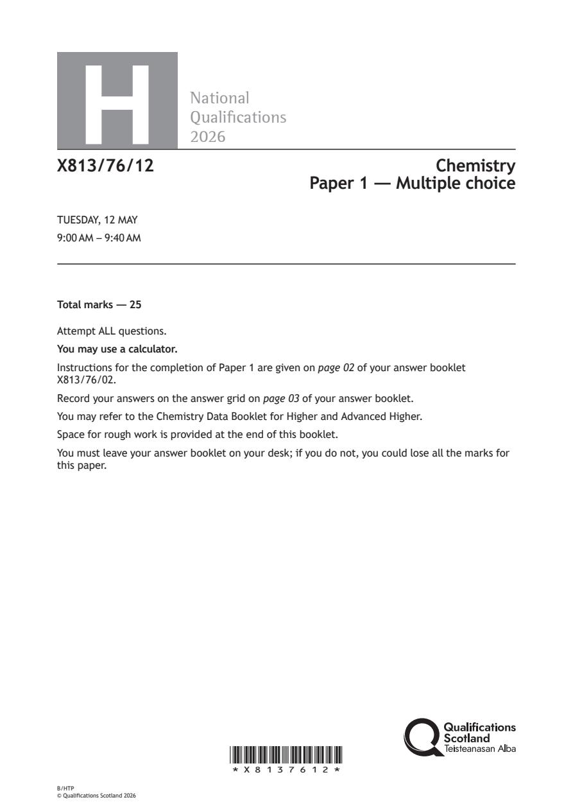
Selectable page text
H
National
Qualications
2026
X813/76/12 Chemistry
Paper 1 — Multiple choice
TUESDAY, 12 MAY
9:00 AM – 9:40 AM
Total marks — 25
Attempt ALL questions.
You may use a calculator.
Instructions for the completion of Paper 1 are given on page 02 of your answer booklet
X813/76/02.
Record your answers on the answer grid on page 03 of your answer booklet.
You may refer to the Chemistry Data Booklet for Higher and Advanced Higher.
Space for rough work is provided at the end of this booklet.
You must leave your answer booklet on your desk; if you do not, you could lose all the marks for
this paper.
*X8137612*
B/HTP
© Qualifications Scotland 2026PDF page 2
Paper 1, Question 1Paper 1, Question 2Paper 1, Question 3Paper 1, Question 4Paper 1, Question 5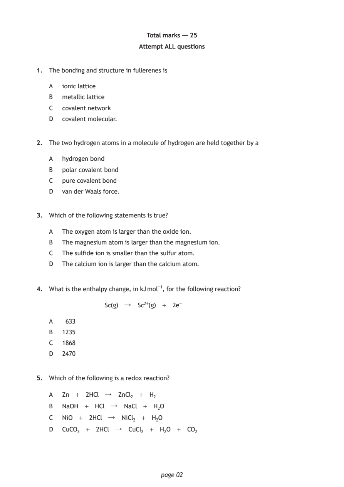
Selectable page text
Total marks — 25
Attempt ALL questions
1. The bonding and structure in fullerenes is
A ionic lattice
B metallic lattice
C covalent network
D covalent molecular.
2. The two hydrogen atoms in a molecule of hydrogen are held together by a
A hydrogen bond
B polar covalent bond
C pure covalent bond
D van der Waals force.
3. Which of the following statements is true?
A The oxygen atom is larger than the oxide ion.
B The magnesium atom is larger than the magnesium ion.
C The sulfide ion is smaller than the sulfur atom.
D The calcium ion is larger than the calcium atom.
4. What is the enthalpy change, in kJ mol⁻¹, for the following reaction?
Sc(g) ↓ Sc²⁺(g) + 2e⁻
A 633
B 1235
C 1868
D 2470
5. Which of the following is a redox reaction?
A Zn + 2HCl ↓ ZnCl₂ + H₂
B NaOH + HCl ↓ NaCl + H₂O
C NiO + 2HCl ↓ NiCl₂ + H₂O
D CuCO₃ + 2HCl ↓ CuCl₂ + H₂O + CO₂
page 02PDF page 3
Paper 1, Question 6Paper 1, Question 7Paper 1, Question 8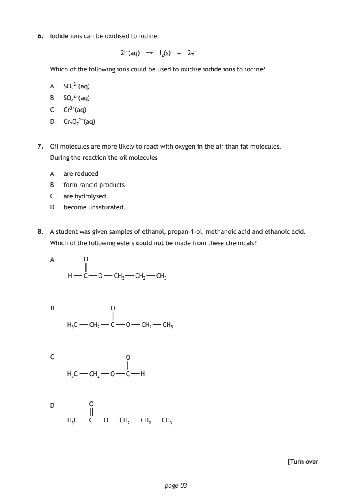
Selectable page text
6. Iodide ions can be oxidised to iodine.
2I⁻(aq) ↓ I₂(s) + 2e⁻
Which of the following ions could be used to oxidise iodide ions to iodine?
A SO₃²⁻(aq)
B SO₄²⁻(aq)
C Cr³⁺(aq)
D Cr₂O₇²⁻(aq)
7. Oil molecules are more likely to react with oxygen in the air than fat molecules.
During the reaction the oil molecules
A are reduced
B form rancid products
C are hydrolysed
D become unsaturated.
8. A student was given samples of ethanol, propan‑1‑ol, methanoic acid and ethanoic acid.
Which of the following esters could not be made from these chemicals?
A O
H C O CH₂ CH₂ CH₃
B O
H₃C CH₂ C O CH₂ CH₃
C O
H₃C CH₂ O C H
D O
H₃C C O CH₂ CH₂ CH₃
[Turn over
page 03PDF page 4
Paper 1, Question 9Paper 1, Question 10Paper 1, Question 11Paper 1, Question 12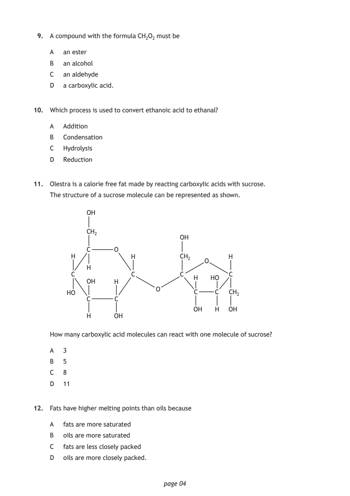
Selectable page text
9. A compound with the formula CH₂O₂ must be
A an ester
B an alcohol
C an aldehyde
D a carboxylic acid.
10. Which process is used to convert ethanoic acid to ethanal?
A Addition
B Condensation
C Hydrolysis
D Reduction
11. Olestra is a calorie free fat made by reacting carboxylic acids with sucrose.
The structure of a sucrose molecule can be represented as shown.
OH
CH₂
OH
C O
H H CH₂ H
O
H
C C C C
H HO
OH H
O
HO C C CH₂
C C
OH H OH
H OH
How many carboxylic acid molecules can react with one molecule of sucrose?
A 3
B 5
C 8
D 11
12. Fats have higher melting points than oils because
A fats are more saturated
B oils are more saturated
C fats are less closely packed
D oils are more closely packed.
page 04PDF page 5
Paper 1, Question 13Paper 1, Question 14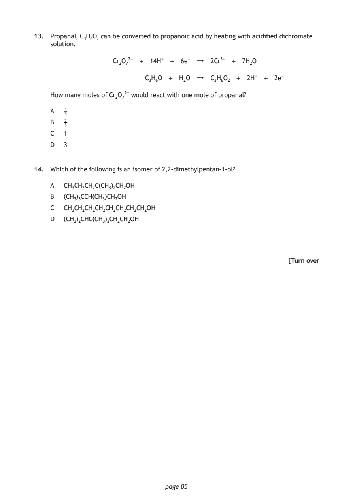
Selectable page text
13. Propanal, C₃H₆O, can be converted to propanoic acid by heating with acidified dichromate
solution.
Cr₂O₇²⁻ + 14H⁺ + 6e⁻ ↓ 2Cr³⁺ + 7H₂O
C₃H₆O + H₂O ↓ C₃H₆O₂ + 2H⁺ + 2e⁻
How many moles of Cr₂O₇²⁻ would react with one mole of propanal?
A 1
3
B 2
3
C 1
D 3
14. Which of the following is an isomer of 2,2‑dimethylpentan‑1‑ol?
A CH₃CH₂CH₂C(CH₃)₂CH₂OH
B (CH₃)₃CCH(CH₃)CH₂OH
C CH₃CH₂CH₂CH₂CH₂CH₂CH₂CH₂OH
D (CH₃)₂CHC(CH₃)₂CH₂CH₂OH
[Turn over
page 05PDF page 6
Paper 1, Question 15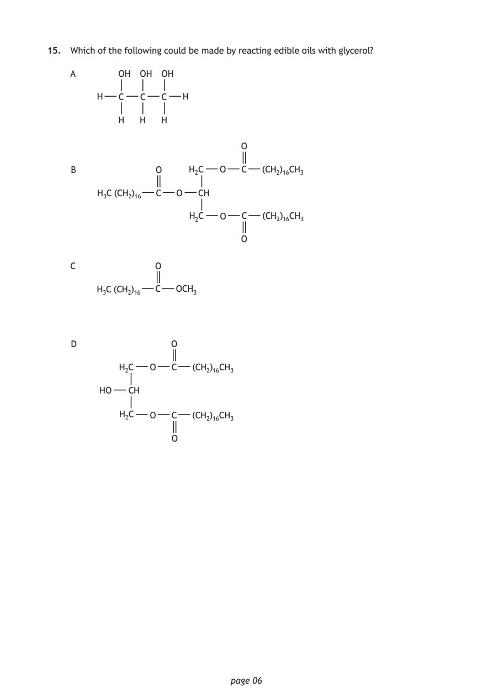
Selectable page text
15. Which of the following could be made by reacting edible oils with glycerol?
A OH OH OH
H C C C H
H H H
O
B O H₂C O C (CH₂)₁₆CH₃
H₃C (CH₂)₁₆ C O CH
H₂C O C (CH₂)₁₆CH₃
O
C O
H₃C (CH₂)₁₆ C OCH₃
D O
H₂C O C (CH₂)₁₆CH₃
HO CH
H₂C O C (CH₂)₁₆CH₃
O
page 06PDF page 7
Paper 1, Question 16Paper 1, Question 17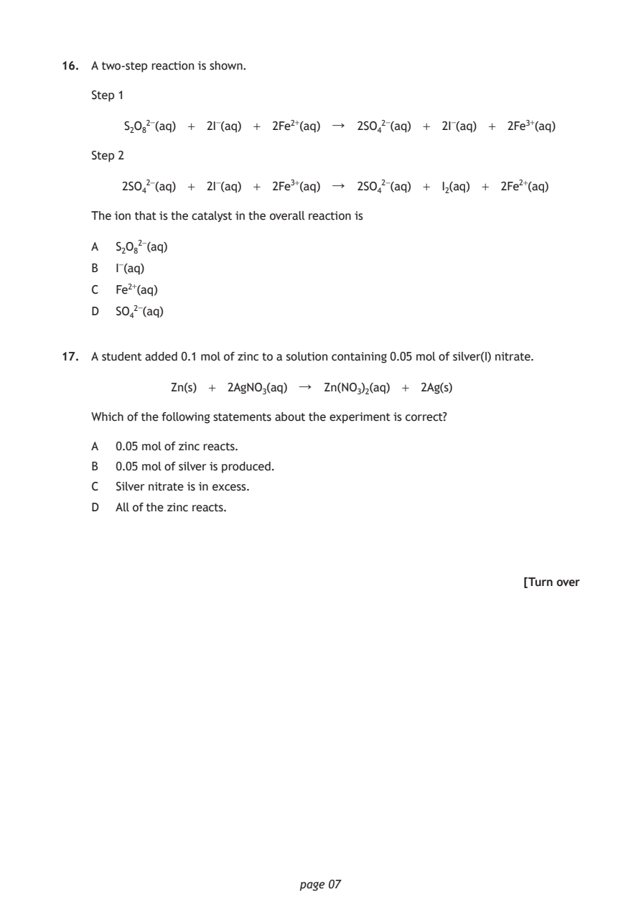
Selectable page text
16. A two‑step reaction is shown.
Step 1
S₂O₈²⁻(aq) + 2I⁻(aq) + 2Fe²⁺(aq) ↓ 2SO₄²⁻(aq) + 2I⁻(aq) + 2Fe³⁺(aq)
Step 2
2SO₄²⁻(aq) + 2I⁻(aq) + 2Fe³⁺(aq) ↓ 2SO₄²⁻(aq) + I₂(aq) + 2Fe²⁺(aq)
The ion that is the catalyst in the overall reaction is
A S₂O₈²⁻(aq)
B I⁻(aq)
C Fe²⁺(aq)
D SO₄²⁻(aq)
17. A student added 0.1 mol of zinc to a solution containing 0.05 mol of silver(I) nitrate.
Zn(s) + 2AgNO₃(aq) ↓ Zn(NO₃)₂(aq) + 2Ag(s)
Which of the following statements about the experiment is correct?
A 0.05 mol of zinc reacts.
B 0.05 mol of silver is produced.
C Silver nitrate is in excess.
D All of the zinc reacts.
[Turn over
page 07PDF page 8
Paper 1, Question 18Paper 1, Question 19Paper 1, Question 20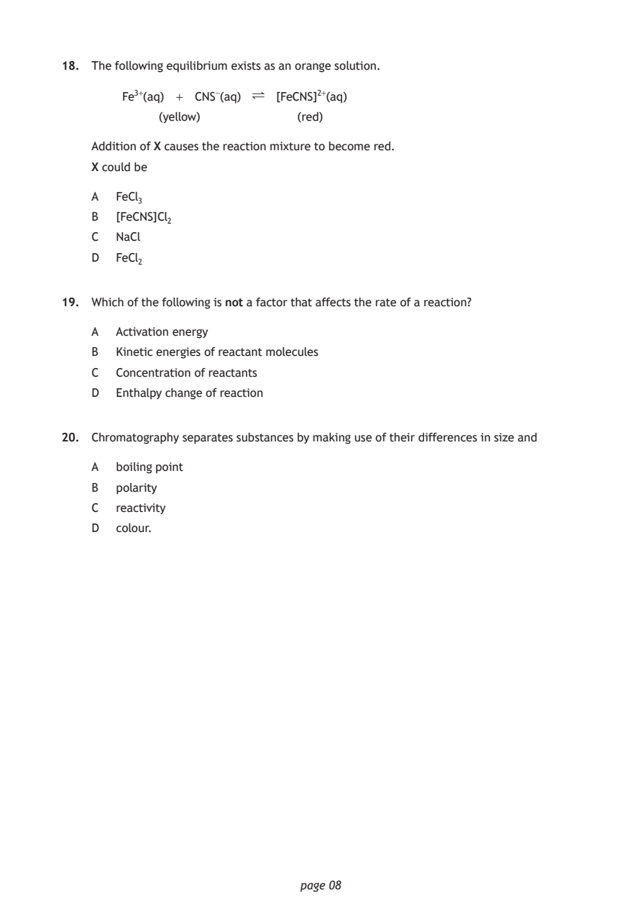
Selectable page text
18. The following equilibrium exists as an orange solution.
Fe³⁺(aq) + CNS⁻(aq) ∏ [FeCNS]²⁺(aq)
(yellow) (red)
Addition of X causes the reaction mixture to become red.
X could be
A FeCl₃
B [FeCNS]Cl₂
C NaCl
D FeCl₂
19. Which of the following is not a factor that affects the rate of a reaction?
A Activation energy
B Kinetic energies of reactant molecules
C Concentration of reactants
D Enthalpy change of reaction
20. Chromatography separates substances by making use of their differences in size and
A boiling point
B polarity
C reactivity
D colour.
page 08PDF page 9
Paper 1, Question 21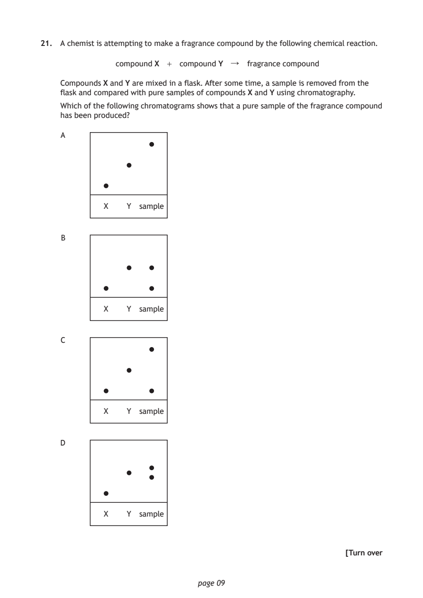
Selectable page text
21. A chemist is attempting to make a fragrance compound by the following chemical reaction.
compound X + compound Y ↓ fragrance compound
Compounds X and Y are mixed in a flask. After some time, a sample is removed from the
flask and compared with pure samples of compounds X and Y using chromatography.
Which of the following chromatograms shows that a pure sample of the fragrance compound
has been produced?
A
X Y sample
B
X Y sample
C
X Y sample
D
X Y sample
[Turn over
page 09PDF page 10
Paper 1, Question 22Paper 1, Question 23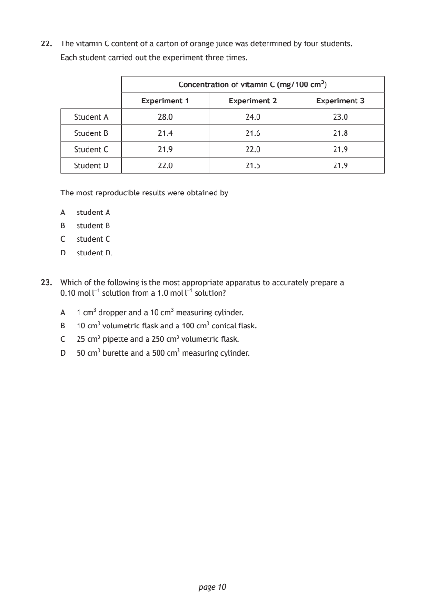
Selectable page text
22. The vitamin C content of a carton of orange juice was determined by four students.
Each student carried out the experiment three times.
Concentration of vitamin C (mg/100 cm³)
Experiment 1 Experiment 2 Experiment 3
Student A 28.0 24.0 23.0
Student B 21.4 21.6 21.8
Student C 21.9 22.0 21.9
Student D 22.0 21.5 21.9
The most reproducible results were obtained by
A student A
B student B
C student C
D student D.
23. Which of the following is the most appropriate apparatus to accurately prepare a
0.10 mol l⁻¹ solution from a 1.0 mol l⁻¹ solution?
A 1 cm³ dropper and a 10 cm³ measuring cylinder.
B 10 cm³ volumetric flask and a 100 cm³ conical flask.
C 25 cm³ pipette and a 250 cm³ volumetric flask.
D 50 cm³ burette and a 500 cm³ measuring cylinder.
page 10PDF page 11
Paper 1, Question 24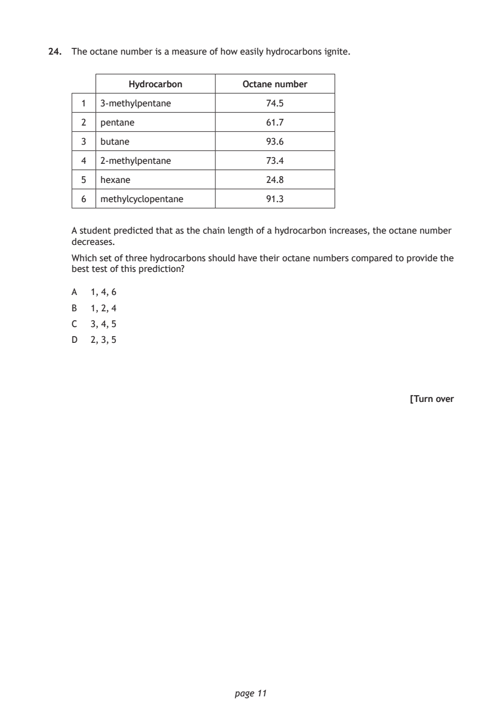
Selectable page text
24. The octane number is a measure of how easily hydrocarbons ignite.
Hydrocarbon Octane number
1 3‑methylpentane 74.5
2 pentane 61.7
3 butane 93.6
4 2‑methylpentane 73.4
5 hexane 24.8
6 methylcyclopentane 91.3
A student predicted that as the chain length of a hydrocarbon increases, the octane number
decreases.
Which set of three hydrocarbons should have their octane numbers compared to provide the
best test of this prediction?
A 1, 4, 6
B 1, 2, 4
C 3, 4, 5
D 2, 3, 5
[Turn over
page 11PDF page 12
Paper 1, Question 25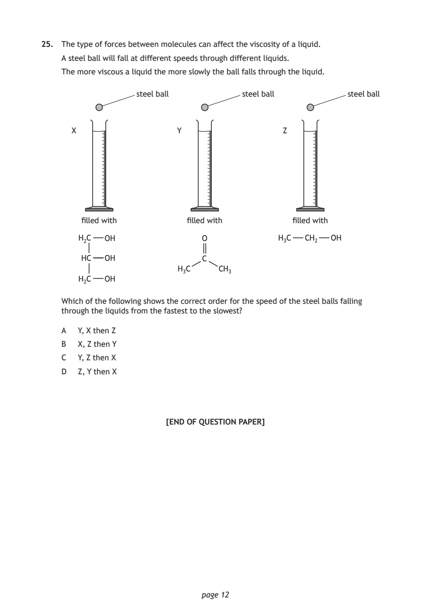
Selectable page text
25. The type of forces between molecules can affect the viscosity of a liquid.
A steel ball will fall at different speeds through different liquids.
The more viscous a liquid the more slowly the ball falls through the liquid.
steel ball steel ball steel ball
X Y Z
filled with filled with filled with
H₂C OH O H₃C CH₂ OH
HC OH C
H₃C CH₃
H₂C OH
Which of the following shows the correct order for the speed of the steel balls falling
through the liquids from the fastest to the slowest?
A Y, X then Z
B X, Z then Y
C Y, Z then X
D Z, Y then X
[END OF QUESTION PAPER]
page 12PDF page 13

Selectable page text
SPACE FOR ROUGH WORK
page 13PDF page 14

Selectable page text
SPACE FOR ROUGH WORK
page 14PDF page 15

Selectable page text
[BLANK PAGE]
DO NOT WRITE ON THIS PAGE
page 15PDF page 16

Selectable page text
[BLANK PAGE]
DO NOT WRITE ON THIS PAGE
page 16